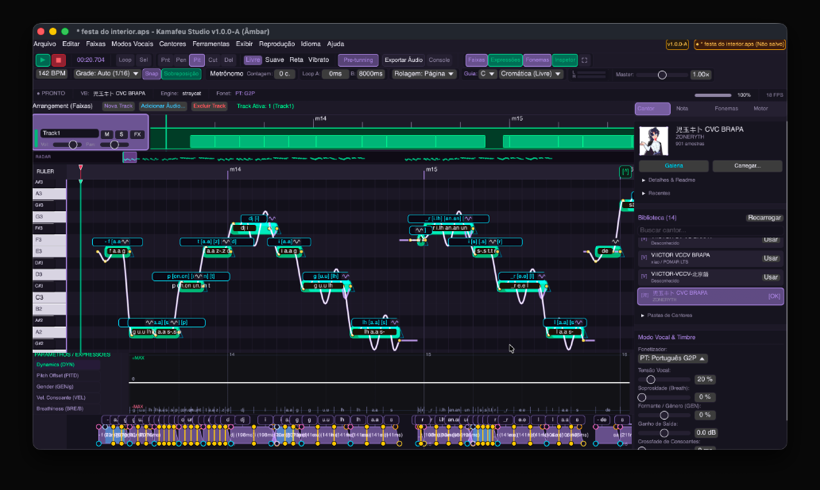
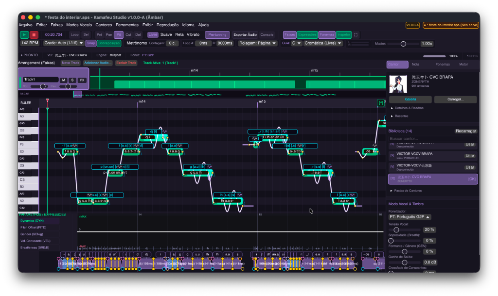

Edição vocal ágil.
Do primeiro fonema à mixagem.
O Kamafeu é um editor de voz cantada feito pelo Studio Pomar para projetos de UTAU e OpenUtau. Construído para ser leve e estável, ele dá controle total sobre afinação, fonemas e múltiplos resamplers com playback em tempo real.

Feito para o fluxo real de trabalho com voz
Recursos pensados para quem afina, fonemiza e renderiza músicas vocais no computador todos os dias.
Piano Roll e Curvas de Pitch
Desenhe notas com encaixe harmônico, ajuste portamentos contínuos e configure vibratos com amplitude e frequência naturais.
Motor Nativo Tainah (WORLD)
Resampler integrado que analisa F0, formantes e ruído com o vocoder WORLD. Estica vogais longas sem distorcer o timbre do cantor.
Régua de Fonemas e OTO.ini
Inspeção visual de consoantes, preutterance, overlap e cutoff na timeline. Suporte direto a voicebanks CV, VCV e esquemas VCCV.
Arranjo em Faixas e Minimapa
Organize arranjos com várias vozes, harmonias e dobras vocais. O minimapa permite saltar rapidamente para qualquer compasso da música.
Projetos .UST e .USTX
Abra suas sessões vindas do UTAU ou OpenUtau, continue compondo no Kamafeu e exporte arquivos de áudio WAV para a sua mixagem final.
Interface Leve e Fluida
Construído sobre a biblioteca egui com renderização direta pela placa de vídeo. Rolagem rápida e sem engasgos mesmo em projetos densos.
Síntese espectral que respeita o timbre da voz
Em vez de apenas acelerar ou diminuir a velocidade dos arquivos de áudio (o que costuma deixar a voz fina ou robotizada), o Kamafeu decompõe cada nota em frequência fundamental (F0), envoltória espectral e ruído afilado. Assim, o cantor mantém suas características vocais em qualquer afinação.
-
Respeito rigoroso aos pontos de corte, consoante e overlap do
oto.ini. - Curvas de pitch calculadas ponto a ponto para transições suaves entre notas vizinhas.
- Suporte a flags clássicas (g, t, B, H) para ajustes de brilho, afinação e soprosidade.
Temas para todo ambiente
Trabalhe no estilo visual que você preferir. O Kamafeu vem com paletas de cores balanceadas para você compor de dia ou passar a noite mixando sem cansar a visão.

Baixe o Kamafeu Studio
Disponível para macOS, Windows e Linux. Escolha a versão para o seu computador ou experimente direto no navegador.
Linha 3.0 (Calafate): Esta é a versão de desenvolvimento ativa e recebe correções frequentes. Você pode conferir os instaladores, notas completas de cada atualização e os códigos de verificação SHA-256 diretamente no GitHub Releases.
Ver todas as versões e notas no GitHub ↗Quem faz o Kamafeu
Um projeto colaborativo e independente mantido pelo Studio Pomar.
Sobre o Studio Pomar
O Studio Pomar é um coletivo independente que constrói ferramentas abertas para música e áudio no computador. Nosso objetivo com o Kamafeu é oferecer uma estação de síntese vocal prática, livre de burocracias e que pertença de verdade à comunidade que cria com voz sintética.
Conhecer mais projetos do Studio Pomar ↗